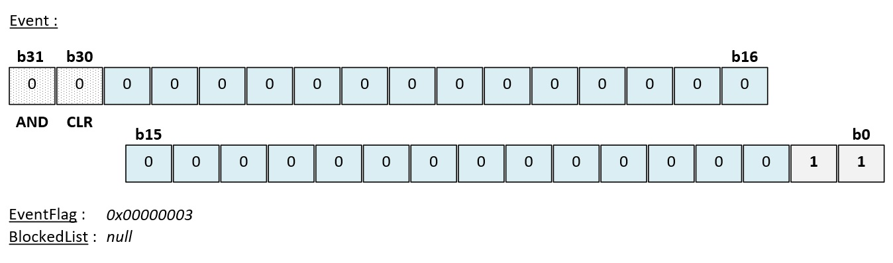
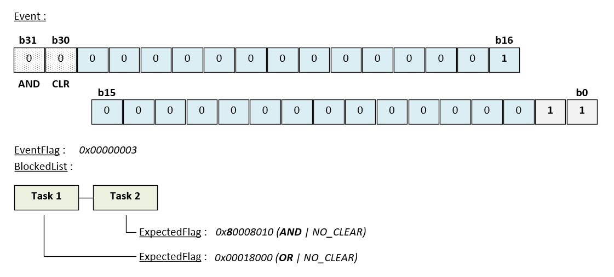
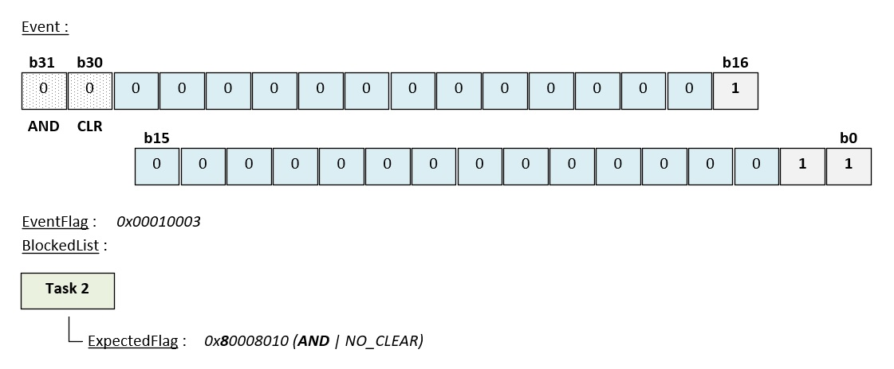
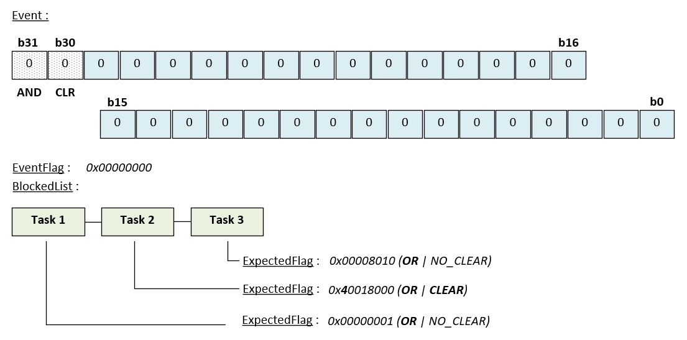
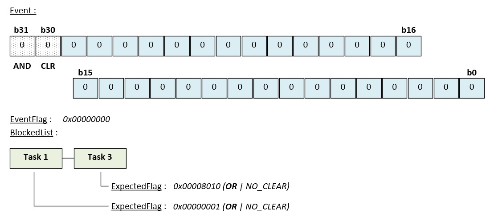

Synchroniser les tâches avec les champs d'événements
Le module event permet à une tâche d'attendre la réalisation d'une ou plusieurs conditions. Cette page détaille le fonctionnement et l'utilisation des fonctions de ce module.
1. Synthèse des fonctions
Les fonctions de ce module sont déclarées dans le fichier mk_event.h :
| Fonction | Description |
|---|---|
| mk_ |
Crée un champ d'événements. |
| mk_ |
Positionne des événements. |
| mk_ |
Réinitialise des événements. |
| mk_ |
Attend le positionnement d'un ou plusieurs événements. |
| mk_ |
Supprime un champ d'événements. |
2. Fonctionnement
Un champ d'événements est une variable de 32 bits dont chaque bit représente un événement. Un événement est soit positionné (bit à 1), soit non positionné (bit à 0). Seuls les bits 0 à 29 sont dédiés aux événements, un champ peut donc contenir 30 événements au maximum. Les deux bits de poids fort sont réservés. Ils permettent de spécifier le type d'opération à réaliser lors d'une attente (AND/OR et CLEAR/NO_CLEAR).
Le sens donné à chaque bit est laissé à l'application. Un bit peut par exemple signaler la fin d'une réception, une erreur de communication ou l'expiration d'un délai. La figure ci-dessous montre la structure d'un champ d'événements auquel les bits b0 et b1 ont été positionnés par une ou plusieurs tâches :

Les champs d'événements sont alloués par le noyau dans l'espace privilégié. Ils sont constitués d'une variable stockant la valeur du champ et d'une liste stockant les tâches en attente d'un ou plusieurs événements (BlockedList).
💬
Deux types de champs d'événements existent. Le type est choisi à la création et ne peut plus être modifié par la suite :
- K_
MK_ : ce type impose qu'une seule tâche soit en attente du champ d'événements à un instant donné. La tâche en attente n'est jamais modifiée peu importe la priorité des tâches qui souhaitent prendre possession du champ d'événements.ID_ EVENT_ SINGLE - K_
MK_ : ce type permet à un nombre illimité de tâches d'être en attente du champ d'événements à un instant donné.ID_ EVENT_ MULTI
Attendre des événements
Lors d'un wait, la tâche indique au noyau les événements qu'elle attend et comment les évaluer. Ce mode d'attente est décrit par deux options combinées avec le masque d'événements :
| Option | Description |
|---|---|
| K_MK_ |
La tâche est débloquée lorsque tous les événements attendus sont positionnés (b31=1). |
| K_MK_ |
La tâche est débloquée dès qu'au moins un des événements attendus est positionné (b31=0). |
| K_MK_ |
Les événements attendus par la tâche sont remis à zéro dans le champ lorsque la condition est satisfaite (b30=1). |
| K_MK_ |
Les événements attendus par la tâche restent positionnés dans le champ lorsque la condition est satisfaite (b30=0). |
Si la condition est déjà satisfaite lorsque la tâche appelle la fonction, la tâche n'est pas bloquée et poursuit immédiatement son exécution. Dans le cas contraire, la tâche peut décider de se bloquer en attendant que les événements soient positionnés.
La figure ci-dessous montre deux tâches (champ MULTI) en attente du positionnement des événements b16 ou b15 pour la tâche 1 et b15 et b4 pour la tâche 2 :

💬
La valeur retournée par la fonction mk_
Positionner des événements
Lors d'un set, les événements demandés sont positionnés dans le champ sans modifier les événements déjà positionnés. Le noyau examine ensuite les tâches en attente du champ d'événements puis débloque celles dont les conditions sont satisfaites :

Dans la figure ci-dessus, l'événement b16 a été positionné, la tâche 1 a donc été réveillée. L'événement reste positionné (NO_CLEAR) et la tâche 2 reste bloquée car ses conditions n'ont pas été réunies.
💬
Les tâches de la liste d'attente sont triées par ordre de priorité et examinées de la plus prioritaire à la moins prioritaire. Lorsque plusieurs tâches possèdent la même priorité, la première tâche à avoir été insérée dans la liste est examinée en premier.
Les champs de type MULTI permettent de réveiller plusieurs tâches avec
un seul set. Lorsque la tâche réveillée a demandé la remise à zéro des
événements attendus (K_
Les figures ci-dessous montrent un exemple où trois tâches sont en attente dans le champ d'événements. Suite au positionnement du bit b15, une seule sera réveillée :


Le noyau examine d'abord la tâche 1 puis la tâche 2 et la tâche 3. La tâche 1 ne correspond pas aux conditions, elle n'est donc pas réveillée. La tâche 3 aurait pu correspondre aux conditions mais n'a pas été débloquée car un CLEAR s'est produit après le réveil de la tâche 2.
⚠️
Pour réveiller simultanément plusieurs tâches avec les mêmes événements, celles-ci doivent
utiliser l'option K_MK_
3. Avantages et inconvénients
Un champ d'événements possède les avantages suivants :
- ✔Il permet d'attendre plusieurs conditions simultanément (opération OR ou AND).
- ✔Il permet de synchroniser tâches et vecteurs d'interruption.
- ✔Il permet de réveiller plusieurs tâches simultanément (signal).
Néanmoins, un événement ne contient pas d'information. Positionner deux fois un événement avant qu'il ne soit consommé est sans effet et les événements ne sont pas comptabilisés. En outre, un champ d'événements ne peut pas contenir plus de 30 événements.
💬
Pour compter des occurrences ou limiter l'accès à une ressource, il est donc préférable d'utiliser un sémaphore. Pour transmettre des données entre deux tâches, il est préférable d'utiliser une boîte de messages.
4. Utilisation
La création d'un champ d'événements s'effectue avec la fonction mk_
/* Définition des événements applicatifs */ #define K_APP_EVENT_RX_DONE ( 1 << 0 ) #define K_APP_EVENT_TX_DONE ( 1 << 1 ) #define K_APP_EVENT_ERROR ( 1 << 2 ) /* Pointeur du champ d'événements */ K_MK_PRIVILEGED_BSS_MEMORY T_mkEvent* g_event; /* Une tâche privilégiée */ void mk_task_privileged ( T_mkAddr p_param ) { /* Déclaration de la variable de retour */ T_mkCode l_result; /* Création d'un champ d'événements de type SINGLE */ /* Il est protégé et ne peut pas être manipulé par des tâches */ /* non privilégiées */ l_result = mk_event_create ( &g_event, K_MK_ID_EVENT_SINGLE, K_MK_AREA_PROTECTED, 0 ); /* Aucun événement positionné */ /* ... */ for ( ;; ) ; }
Une tâche attend ensuite des événements avec la fonction mk_
/* Une tâche de traitement (privilégiée) */ void mk_task_handler ( T_mkAddr p_param ) { /* Déclaration des variables de travail */ T_mkCode l_result; uint32_t l_flag; while ( 1 ) { /* Attente de l'un des trois événements (OR) */ /* Les événements attendus sont remis à zéro au réveil de la tâche */ l_result = mk_event_wait ( g_event, K_APP_EVENT_RX_DONE | K_APP_EVENT_TX_DONE | K_APP_EVENT_ERROR | K_MK_EVENT_OR | K_MK_EVENT_CLEAR, &l_flag, 100 ); if ( l_result == K_MK_OK ) { /* Analyse des événements positionnés */ if ( ( l_flag & K_APP_EVENT_RX_DONE ) != 0 ) { /* Traitement de la réception ... */ } if ( ( l_flag & K_APP_EVENT_TX_DONE ) != 0 ) { /* Traitement de la transmission ... */ } if ( ( l_flag & K_APP_EVENT_ERROR ) != 0 ) { /* Traitement de l'erreur ... */ } } else if ( l_result == K_MK_ERROR_TIMEOUT ) { /* Aucun événement positionné pendant 100 ticks */ } else { /* Gestion des erreurs ... */ /* K_MK_ERROR_PARAM, K_MK_ERROR_ISR, K_MK_ERROR_NOT_AVAILABLE */ /* K_MK_ERROR_RIGHT, K_MK_ERROR_UNEXPECTED */ } } }
💬
Si le paramètre p_mkTick est nul et si aucun des événements
attendus
n'est positionné, la fonction mk_
L'option K_MK_EVENT_AND permet d'attendre que plusieurs événements soient positionnés. L'exemple ci-dessous bloque la tâche jusqu'à la fin d'une réception et d'une transmission :
/* Attente de la réception ET de la transmission */ /* La tâche est bloquée indéfiniment tant que les deux événements */ /* ne sont pas positionnés */ l_result = mk_event_wait ( g_event, K_APP_EVENT_RX_DONE | K_APP_EVENT_TX_DONE | K_MK_EVENT_AND | K_MK_EVENT_CLEAR, &l_flag, K_MK_TASK_WAIT_FOREVER );
Les événements sont positionnés avec la fonction mk_
/* Vecteur d'interruption */ void IRQHandler ( void ) { /* Réveil de la tâche de traitement */ T_mkCode l_result = mk_event_set ( g_event, K_APP_EVENT_RX_DONE ); ( void ) l_result; }
⚠️
L'interruption doit être moins prioritaire que le vecteur SVC pour
pouvoir utiliser les appels système (priorité numérique
supérieure ou égale à K_
Un champ de type MULTI permet de réveiller plusieurs tâches avec un seul
événement. Chacune des tâches ci-dessous
utilise l'option K_
/* Définition des événements applicatifs */ #define K_APP_EVENT_TASK1_INIT_DONE ( 1 << 0 ) #define K_APP_EVENT_TASK2_INIT_DONE ( 1 << 1 ) #define K_APP_EVENT_TASK3_INIT_DONE ( 1 << 2 ) /* Création d'un champ d'événements de type MULTI */ l_result = mk_event_create ( &g_event, K_MK_ID_EVENT_MULTI, K_MK_AREA_PROTECTED, 0 ); /* ... */ /* Après leur initialisation, chacune des 3 tâches indique aux autres */ /* une initialisation correcte en positionnant son événement */ l_result = mk_event_set ( g_event, K_APP_EVENT_TASKx_INIT_DONE ); /* ... */ /* Chacune des 3 tâches attend ensuite la fin de l'initialisation des */ /* autres tâches */ l_result = mk_event_wait ( g_event, K_APP_EVENT_TASK1_INIT_DONE | K_APP_EVENT_TASK2_INIT_DONE | K_APP_EVENT_TASK3_INIT_DONE | K_MK_EVENT_AND | K_MK_EVENT_NO_CLEAR, &l_flag, K_MK_TASK_WAIT_FOREVER ); /* Lorsque toutes les tâches ont été servies, l'événement peut être */ /* remis à zéro partiellement ou entièrement. */ /* Quand les 3 tâches ont exécuté leur wait, on réalise le clear */ l_result = mk_event_clear ( g_event, K_APP_EVENT_TASK1_INIT_DONE | K_APP_EVENT_TASK2_INIT_DONE | K_APP_EVENT_TASK3_INIT_DONE );
💬
Un champ de type SINGLE ne peut avoir qu'une seule tâche en
attente. Si une seconde tâche appelle
la fonction mk_
La dernière fonction de l'API est la fonction mk_event_delete. Elle permet de détruire le champ d'événements en demandant au noyau de le désallouer :
/* Suppression du champ d'événements */ T_mkCode l_result = mk_event_delete ( g_event ); /* Si une erreur s'est produite */ if ( l_result != K_MK_OK ) { /* Gestion des erreurs ... */ /* K_MK_ERROR_PARAM, K_MK_ERROR_ISR, K_MK_ERROR_RIGHT */ }
5. Protéger ses champs d'événements
Les champs d'événements peuvent être créés avec les attributs K_
Lorsque l'attribut K_
Du fait de leur niveau d'exécution, l'ensemble des règles de protection ne s'applique pas aux vecteurs
d'interruption. Les fonctions mk_
Les champs d'événements étant alloués par le noyau dans l'espace privilégié, aucune règle de placement ne s'applique. Seules les variables stockant leurs adresses doivent être accessibles aux tâches qui les utilisent. Les règles de placement de ces variables sont détaillées dans l'article Protéger son programme avec Mk.
6. API
6.1. La fonction mk_event_create()
Cette fonction crée un champ d'événements.
Prototype :
T_mkCode mk_event_create ( T_mkEvent** p_mkEvent, uint32_t p_mkType, uint32_t p_mkAreaType, uint32_t p_mkFlag );
Paramètres :
- p_mkEvent [out]
Adresse d'un pointeur de type T_mkEvent*.
- p_mkType [in]
Type du champ d'événements. Les valeurs possibles sont les suivantes :
- K_MK_ID_EVENT_SINGLE : une seule tâche peut être en attente du champ d'événements.
- K_MK_ID_EVENT_MULTI : un nombre illimité de tâches peut être en attente du champ d'événements.
- p_mkAreaType [in]
Niveau de protection du champ. Les valeurs possibles sont les suivantes :
- K_MK_AREA_PROTECTED : le champ est protégé, il ne peut pas être manipulé par des tâches non privilégiées.
- K_MK_AREA_UNPROTECTED : le champ n'est pas protégé, il peut être manipulé par des tâches privilégiées ou non privilégiées.
- p_mkFlag [in]
Valeur initiale du champ d'événements. Les bits 30 et 31 sont ignorés.
Retour :
- K_MK_OK : le champ d'événements a été créé.
- K_MK_ERROR_PARAM : le champ d'événements n'a pas été créé car au moins un paramètre est invalide.
- K_MK_ERROR_MALLOC : le champ d'événements n'a pas été créé car le nombre maximal de champs pouvant être alloués a été atteint.
- K_MK_ERROR_ISR : le champ d'événements n'a pas été créé car cette fonction a été exécutée dans un vecteur d'interruption.
- K_MK_ERROR_RIGHT : le champ d'événements n'a pas été créé car une tâche non privilégiée ne peut pas créer un champ protégé.
Note :
- Cette fonction ne peut pas être exécutée dans un vecteur d'interruption.
- La constante K_
MK_ définit le nombre maximal de champs d'événements pouvant être créés.SCHEDULER_ MAX_ NUMBER_ OF_ EVENTS
6.2. La fonction mk_event_set()
Cette fonction positionne des événements dans un champ sans modifier les événements déjà positionnés. La ou les tâches en attente d'un ou plusieurs événements dont la condition est satisfaite sont ensuite réveillées.
Prototype :
T_mkCode mk_event_set ( T_mkEvent* p_mkEvent, uint32_t p_mkFlag );
Paramètres :
- p_mkEvent [in, out]
Adresse d'une structure de type T_mkEvent.
- p_mkFlag [in]
Masque des événements à positionner (bits 0 à 29).
Retour :
- K_MK_OK : les événements ont été positionnés.
- K_MK_ERROR_PARAM : les événements n'ont pas été positionnés car le paramètre est invalide.
- K_MK_ERROR_RIGHT : les événements n'ont pas été positionnés car une tâche non privilégiée ne peut pas manipuler un champ protégé.
Note :
- Cette fonction peut être exécutée dans un vecteur d'interruption.
- Si le paramètre p_mkFlag est nul, le champ n'est pas modifié et la fonction retourne K_MK_OK.
- Les valeurs des bits 30 et 31 du paramètre p_mkFlag sont ignorées.
6.3. La fonction mk_event_clear()
Cette fonction remet à zéro des événements d'un champ sans réveiller de tâche.
Prototype :
T_mkCode mk_event_clear ( T_mkEvent* p_mkEvent, uint32_t p_mkFlag );
Paramètres :
- p_mkEvent [in, out]
Adresse d'une structure de type T_mkEvent.
- p_mkFlag [in]
Masque des événements à remettre à zéro (bits 0 à 29).
Retour :
- K_MK_OK : les événements ont été remis à zéro.
- K_MK_ERROR_PARAM : les événements n'ont pas été remis à zéro car le paramètre est invalide.
- K_MK_ERROR_RIGHT : les événements n'ont pas été remis à zéro car une tâche non privilégiée ne peut pas manipuler un champ protégé.
Note :
- Cette fonction peut être exécutée dans un vecteur d'interruption.
- Si le paramètre p_mkFlag est nul, le champ n'est pas modifié et la fonction retourne K_MK_OK.
- Les valeurs des bits 30 et 31 du paramètre p_mkFlag sont ignorées.
6.4. La fonction mk_event_wait()
Cette fonction attend le positionnement d'un ou plusieurs événements. Si la condition n'est pas satisfaite, la tâche peut être bloquée en attendant que les événements soient positionnés.
Prototype :
T_mkCode mk_event_wait ( T_mkEvent* p_mkEvent, uint32_t p_mkInFlag, uint32_t* p_mkOutFlag, uint32_t p_mkTick );
Paramètres :
- p_mkEvent [in, out]
Adresse d'une structure de type T_mkEvent.
- p_mkInFlag [in]
Masque des événements attendus (bits 0 à 29) combiné avec les options de contrôle. Ce masque doit contenir au moins un événement, les options seules ne sont pas suffisantes. Les constantes suivantes peuvent être utilisées :
- K_MK_EVENT_OR : la condition est satisfaite lorsqu'au moins un événement attendu est positionné.
- K_MK_EVENT_AND : la condition est satisfaite lorsque tous les événements attendus sont positionnés.
- K_MK_EVENT_CLEAR : les événements attendus sont remis à zéro lorsque la condition est satisfaite.
- K_MK_EVENT_NO_CLEAR : les événements attendus ne sont pas remis à zéro lorsque la condition est satisfaite.
- p_mkOutFlag [out]
Adresse d'une variable stockant la valeur du champ d'événements au moment où la condition a été satisfaite.
- p_mkTick [in]
Durée maximale de blocage de la tâche. Les valeurs possibles sont les suivantes :
- 0x0 : la fonction retourne immédiatement si la condition n'est pas satisfaite.
- 0x1 à 0xFFFFFFFE : la tâche est bloquée pendant la durée spécifiée (en multiple de tick) tant que la condition n'est pas satisfaite.
- 0xFFFFFFFF (K_MK_TASK_WAIT_FOREVER) : la tâche est bloquée tant que la condition n'est pas satisfaite.
Retour :
- K_MK_OK : la condition a été satisfaite.
- K_MK_ERROR_PARAM : le positionnement des événements n'a pas été vérifié car au moins un paramètre est invalide ou car aucun événement n'est attendu.
- K_MK_ERROR_TIMEOUT : la condition n'a pas été satisfaite dans le délai imparti.
- K_MK_ERROR_ISR : le positionnement des événements n'a pas été vérifié car la fonction a été exécutée dans un vecteur d'interruption.
- K_MK_ERROR_NOT_AVAILABLE : le positionnement des événements n'a pas été vérifié car une tâche est déjà en attente du champ (champ de type SINGLE uniquement).
- K_MK_ERROR_RIGHT : le positionnement des événements n'a pas été vérifié car une tâche non privilégiée ne peut pas manipuler un champ protégé.
- K_MK_ERROR_UNEXPECTED : le positionnement des événements n'a pas été vérifié car le champ d'événements a été détruit pendant que la tâche était bloquée.
Note :
- Cette fonction ne peut pas être exécutée dans un vecteur d'interruption.
- Lorsque plusieurs tâches sont bloquées sur le même champ (type MULTI), elles sont examinées par ordre de priorité décroissante.
6.5. La fonction mk_event_delete()
Cette fonction détruit un champ d'événements.
Prototype :
T_mkCode mk_event_delete ( T_mkEvent* p_mkEvent );
Paramètres :
- p_mkEvent [in, out]
Adresse d'une structure de type T_mkEvent.
Retour :
- K_MK_OK : le champ d'événements a été détruit.
- K_MK_ERROR_PARAM : le champ d'événements n'a pas été détruit car le paramètre est invalide.
- K_MK_ERROR_ISR : le champ d'événements n'a pas été détruit car la fonction a été exécutée dans un vecteur d'interruption.
- K_MK_ERROR_RIGHT : le champ d'événements n'a pas été détruit car une tâche non privilégiée ne peut pas manipuler un champ protégé.
Note :
- Cette fonction ne peut pas être exécutée dans un vecteur d'interruption.
Attention :
⚠️
- Lorsque le champ
d'événements est détruit, les tâches bloquées par la fonction mk_
event_ sont réveillées. Elles retournent alors l'erreur K_MK_ERROR_UNEXPECTED.wait
6.6. Les définitions
Le module event peut être configuré à l'aide des définitions suivantes :
| Définition | Description | Valeur |
|---|---|---|
| K_MK_ |
Cette constante définit le nombre de champs d'événements pouvant être créés. Elle ne peut pas être nulle. | 32 |
Le nombre de champs d'événements pouvant être alloués par le noyau est limité. Il est défini à la compilation par la constante K_MK_SCHEDULER_MAX_NUMBER_OF_EVENTS .